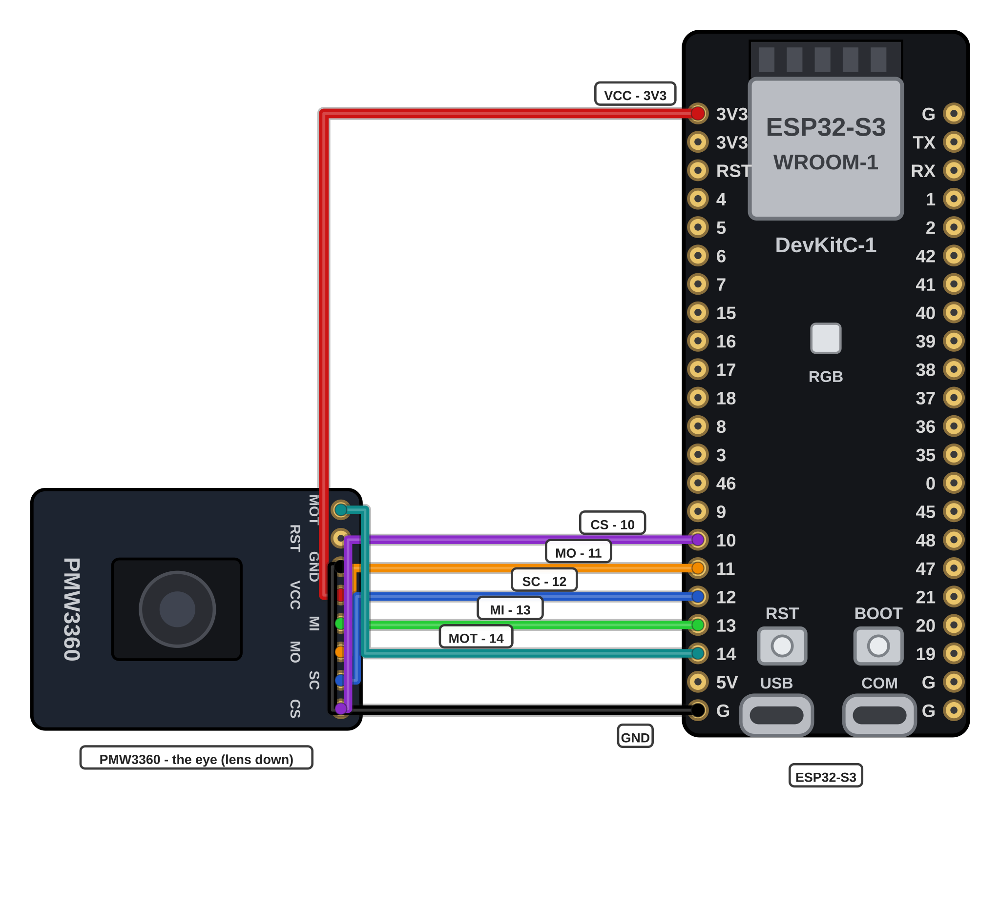

מתקינים את ספריית החיישן, מעלים את הקוד ורואים את הסמן זז בפעם הראשונה.
💻 פותחים את קלוד קוד ומבקשים ממנו להתקין את ספריית החיישן: PMW3360 Module של SunjunKim.כותבים לו בעברית פשוטה שרוצים את הספרייה הזאת בשביל חיישן העכבר — הוא ימצא אותה ב-Library Manager ויתקין אותה. זו הספרייה שיודעת לדבר עם העין של העכבר.
מעלים ללוח את 02_sensor_test.
שתי ההגדרות כוונו כבר בכרטיסיות הקודמות — רק בודקים שהן עדיין שם. אם ההעלאה לא מתחילה: מחזיקים את BOOT לחוץ, לוחצים קצרות על RESET, משחררים ומנסים שוב.
מחליקים את כל הברדבורד על משטח עכבר — הסמן על המסך עוקב אחרי היד.מחזיקים את כבל ה-USB רפוי ביד השנייה, שלא ימשוך את החוטים.
עכשיו המבחן האמיתי: מניחים על השולחן חתיכת שמיכה או משהו רך כמו מזרן ומחליקים את הלוח עליו. זו הסיבה שהעכבר הזה קיים — רואים איך הוא מתנהג שם.
משחקים עם התנועה: לאט, מהר, עיגולים. מרגישים איך העין של העכבר קוראת את המשטח.
מזיזים את הלוח — הסמן במסך זז יחד עם היד. גם על הבד.
אם הסמן מרגיש איטי — זה בסדר: הקוד מתחיל במהירות עדינה. את המהירות משנים בכרטיסייה של גלגלת המהירות.
